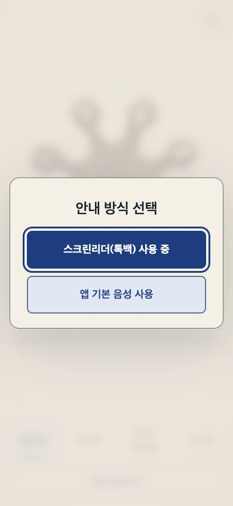

청동의 울림 UI/UX 설계
저시력 사용자가 유물을 가까이 관찰하고, 모양을 따라 각 부분의 설명을 들을 수 있도록 설계한 디지털 유물 경험이다. 소리의 리듬은 시각 패턴과 진동으로 함께 전달한다. 실제 화면을 바탕으로 배치, 색상, 글자와 감각 안내의 선택 이유를 정리한다.
1. UI 배치도
유물은 화면 중앙에 크게 두고, 반복해서 사용하는 조작은 하단에 모은다. 손을 크게 옮기지 않고 관찰과 선택을 이어가도록 구성한다.

- 중앙 유물 배치
- 유물 주변의 문구와 장식을 줄여 형태에 시선이 머물게 한다. 가로 드래그로 돌려보는 공간을 메뉴와 분리해, 관찰 중 다른 기능을 잘못 누르는 일을 줄이고자 한다.
- 하단 조작 배치
- 터치와 드래그를 반복하는 모바일 사용 흐름에서 엄지가 닿기 쉬운 하단에 주요 행동을 둔다. 종류 선택을 나란히 두고 그 아래에 긴 ‘유물 살펴보기’ 버튼을 배치해, 같은 위치에서 다음 행동을 찾게 한다. 참고 사례의 하단 엄지 영역과 일관된 조작 순서를 적용한 구성이다. [1]
- 보조 기능과 해설 화면
- 출처는 우측 상단 정보 아이콘으로 분리한다. ‘유물 살펴보기’에서는 현재 유물과 부위별 설명에 집중하도록 종류 선택을 숨기고, 하단에는 ‘돌아가기’를 둔다.
2. 색상과 명암
아이보리와 네이비를 바탕으로 청동 유물의 색감을 살리고, 짙은 파랑과 골드로 조작과 윤곽을 구분한다. 유물의 표면색은 유지하면서 글자·번호·버튼의 밝기 차이를 크게 잡는다.

- 밝은 관찰 화면
- 따뜻한 아이보리 바탕은 청동 표면의 어두운 색과 형태를 드러낸다. 본문은 먹색, 보조 문구는 짙은 회색을 사용해 정보의 위계를 나누면서 읽기 대비를 유지한다.
- 어두운 해설 화면
- 네이비 바탕은 유물 밖의 시각적 자극을 줄이고, 밝은 골드 윤곽은 외곽과 구멍의 경계를 드러낸다. 설명 글자는 밝은 아이보리로 표시해 형태와 해설을 함께 읽게 한다.
- 선택과 조작의 구분
- 파랑은 실행과 포커스, 골드는 모양과 설명 지점을 나타낸다. 선택 상태에는 밑줄·굵기·테두리를 함께 사용해 색만으로 의미를 구별하지 않도록 한다. [1]
| 용도 | 글자·선 / 배경 | 명암비 |
|---|---|---|
| 관찰 본문 | #192536 / #F6F2E9 | 13.83:1 |
| 보조 문구 | #515D6D / #F6F2E9 | 5.99:1 |
| 실행 버튼 | #FFFFFF / #26488C | 8.79:1 |
| 윤곽·번호 | #EDCF8B / #111B2A | 11.45:1 |
| 부위별 해설 | #F6F2E9 / #111B2A | 15.48:1 |
WCAG의 일반 글자 4.5:1, UI 경계 3:1 기준을 참고해 색상 쌍의 명암비를 계산했다. [3] [4] 전체 색상표 · 상세 명암비 표


3. 글꼴과 간격
익숙한 고딕체와 큰 해설
한글 시스템 고딕을 사용해 익숙한 글자 형태로 읽게 한다. Apple SD Gothic Neo, Noto Sans KR, 맑은 고딕, 시스템 산세리프 순으로 적용한다. 얇은 장식체보다 글자 획과 낱자의 구분이 분명한 구성을 선택했다.
자주 누르는 메뉴는 16px, 부위별 해설은 22px로 두어 읽는 내용에 더 큰 크기를 배정한다. ‘돌아가기’와 출처 본문은 20px다. 해설의 줄높이는 1.65, 출처는 1.7로 설정해 다음 줄을 찾기 쉽도록 한다. 글자 크기와 간격이 식별성과 읽기 흐름에 영향을 준다는 저시력 요구사항을 반영했다. [2]
간격과 누르기 영역
유물 살펴보기 버튼은 높이 52px, 돌아가기는 56px로 넓게 구성한다. 상단 출처 아이콘은 44×44px의 누르기 영역을 확보한다. 하단 유물 선택은 4px 간격으로 구분하고, 긴 이름은 의미 단위로 줄바꿈한다.
필요한 순간의 짧은 설명
지속적인 도움말 대신 버튼 이름으로 행동을 전달하고, 부위를 선택했을 때 이름과 짧은 해설을 제공한다. 읽어야 할 양을 줄여 유물과 현재 설명 사이를 쉽게 오가도록 한다. 출처는 별도 팝업에 모아 관찰 화면을 간결하게 유지한다. [1]

4. 유물 관찰과 해설
가까이 보는 관찰
조준동 교수가 공동저자로 참여한 이양희 외(2019)의 「시각장애인의 전시예술품 관람 욕구조사」는 83명의 응답을 분석했다. 연구에서는 작품 가까이에 눈을 대고 감상하는 방식을 선호하며, 절반 이상이 잔존시각을 활용한다고 보고했다. [5]
이 관찰 욕구를 바탕으로 개인 화면에 유물을 크게 제시하고, 좌우 회전으로 원하는 시점에서 살펴보게 한다. 화면 가까이에서 자신의 속도로 형태를 확인하는 경험을 중심에 둔다.


소리의 시각·촉각 표현
휴대폰을 흔들면 방울 소리와 함께 하단의 시각 패턴과 진동이 같은 리듬으로 반응한다. 흔드는 움직임에 따라 달라지는 울림의 발생 시점과 강약을 눈으로 보고 손으로 느끼게 한다. 청각 정보를 시각과 촉각으로 함께 표현해 소리의 흐름을 여러 감각으로 파악하도록 한다.
모양을 알려주는 진동
‘유물 살펴보기’에서는 화면에 보이는 유물 모양에 맞춰 촉각 반응 영역을 만든다. 손가락이 유물 안에 닿으면 진동하고, 외곽이나 구멍 밖으로 벗어나면 멈춘다. 굵은 윤곽선과 진동의 유무를 함께 단서로 삼아, 손을 움직이며 형태와 빈 공간의 경계를 따라가도록 한다.
설명 지점으로 이끄는 안내음
유물 위에서 설명 지점에 가까워질수록 안내음의 간격이 짧아지고 음높이가 올라간다. 앱 기본 음성에서는 지점에 닿으면 도착음과 부위 이름을 들려주고, 손을 떼었다 다시 닿으면 짧은 해설을 제공한다. 스크린리더 모드에서는 부위 버튼을 실행하면 해설을 안내한다. 가까워지는 소리로 위치를 찾고, 진동으로 형태를 확인하며, 음성과 글로 의미를 이해하는 흐름이다.
형태와 설명의 연결
‘유물 살펴보기’는 보고 있던 시점의 모양을 유지한 채 외곽과 구멍을 굵은 윤곽으로 표시한다. 손으로 모양을 따라가며 전체 구조를 확인하고, 주요 지점에 닿아 해당 부위의 이름과 음성 해설을 들을 수 있다.
각 유물의 2~3개 지점에 설명을 연결해 전체 모양과 부분의 의미를 함께 이해하도록 한다. 실물이 없어도 시점에 따라 달라지는 형상을 살펴보고, 궁금한 부분의 이야기를 선택해 듣는 방식이다.
5. 스크린리더와 음성 안내
시각장애인이 사용하는 스크린리더와 함께 유물을 탐색할 수 있도록 접근성 기능을 적용했다. Android TalkBack을 켠 실제 모바일 환경에서 호환성과 사용 흐름을 점검하며, 포커스 이동·버튼 실행·음성 중복 방지·해설 전달을 확인하고 개선했다. 아래 동작 영상에 실제 조작 과정을 담았다.
Android에서 TalkBack 켜기
휴대전화 설정 → 접근성 → TalkBack → 사용을 켠다. 이어서 청동의 울림 초기 팝업에서 ‘스크린리더(톡백) 사용 중’을 선택한다.
한 손가락으로 터치하면 항목을 선택해 읽고, 두 번 탭하면 실행한다. 오른쪽으로 쓸어 다음 항목으로 이동하며, 화면 스크롤은 두 손가락으로 한다. [10]
처음에 안내 방식 선택
첫 팝업에서 ‘스크린리더(톡백) 사용 중’과 ‘앱 기본 음성 사용’을 선택한다. 사용자가 익숙한 음성으로 체험하도록 안내 경로를 나눈다. 이 선택은 기기의 스크린리더를 켜는 기능이 아니라, 앱이 안내를 전달하는 방식을 정한다.
스크린리더를 선택하면 앱 자체 TTS를 끄고 이름·해설·상태 안내를 스크린리더로 전달한다. 두 음성이 겹쳐 내용을 놓치는 일을 방지하기 위한 구성이다. 방울 소리와 시각 패턴·진동은 두 모드에서 함께 제공한다.
위쪽 선택은 짙은 파랑으로 강조하고, ‘앱 기본 음성 사용’은 밝은 바탕과 짙은 글자로 구분한다. 음성 안내가 필요한 사용자가 첫 선택을 쉽게 찾도록 한다.

TalkBack 사용 동작 영상
스크린리더를 켠 상태에서 실제 모바일 화면을 조작한 샘플 영상이다. 포커스 표시와 화면 이동 흐름을 함께 확인할 수 있다.
동작 영상 별도로 열기
현재 유물에서 시작하는 탐색 순서
첫 입장에서는 현재 유물에 포커스를 두고 이름과 함께 ‘흔들면 방울 소리와 진동이 반응하며, 좌우로 돌려볼 수 있다’는 핵심 조작을 안내한다. 무엇을 체험하는 화면인지 먼저 파악한 뒤 조작으로 이어가도록 한다.
유물 → 소리·진동 표시 → 설명 텍스트 → 팔주령 → 쌍두령 → 조합식쌍두령 → 간두령 → 유물 살펴보기
화면의 위아래를 불규칙하게 오가지 않도록 문서 순서를 배치와 맞춘다. 팔주령에서 이전 항목으로 이동하면 설명 텍스트, 소리·진동 표시, 유물, 출처 순으로 거슬러 올라간다. 설명 텍스트는 표시 중일 때 탐색에 포함된다. [6]
- 화면 전환과 복귀
- ‘유물 살펴보기’로 들어가면 첫 부위 버튼에서 시작하고, 돌아오면 진입 버튼으로 포커스를 되돌린다. 출처 팝업에서는 팝업 안에서 탐색하고, 닫으면 출처 버튼으로 돌아온다. 이동 전후의 위치를 연결해 현재 맥락을 유지한다.
- 조작 방식의 구분
- 앱 기본 음성에서는 첫 선택에 이름, 두 번째 선택에 실행과 설명을 제공한다. 스크린리더 모드의 본화면은 스크린리더의 선택·실행 방식을 따르며 앱의 추가 확인 단계를 겹치지 않는다. 초기 안내 방식 팝업은 이름을 확인한 뒤 같은 버튼을 다시 실행해 입장한다.
이름·도움말·상태를 나누어 전달
짧은 이름은 ‘무엇인지’, 도움말은 ‘어떻게 사용할지’를 설명한다. 글자가 있는 버튼은 화면의 이름을 그대로 사용하고, 아이콘과 유물에는 aria-label로 의미를 부여한다. 조작 도움말은 aria-describedby로 따로 연결해 이름을 길게 만들지 않는다. [7]
| 요소 | 전달하는 정보 |
|---|---|
| 중앙 유물 | 현재 유물 이름. 부위별 설명은 ‘유물 살펴보기’에서 확인할 수 있다는 도움말 |
| 출처 아이콘 / 닫기 | ‘출처 정보’ / ‘출처 정보 닫기’. 팝업을 여는 버튼임을 함께 제공 |
| 유물 선택 / 부위 버튼 | 유물 이름 또는 번호와 부위 이름. 현재 선택 상태는 aria-current로 전달 |
| 유물 살펴보기 | 화면과 같은 버튼 이름. 설명 영역의 열림 상태는 aria-expanded로 전달 |
| 소리·진동 표시 | ‘움직임에 반응하는 소리와 진동 패턴’. 내부 그림 요소의 중복 읽기는 제외 |
변화하는 설명도 음성과 글로
부위 해설, 조작 결과와 센서 상태는 화면에 글로 표시하고 스크린리더 알림 영역에도 전달한다. aria-live="polite"와 상태 역할을 사용해, 새 안내를 확인하기 위해 포커스를 옮길 필요가 없도록 한다. 같은 설명을 여러 영역에서 동시에 읽지 않게 알림 경로를 하나로 모은다. [8]
장식용 아이콘과 중복된 내부 그림은 읽기 대상에서 제외하고, 주요 부위는 이름이 있는 버튼으로 제공한다. 터치뿐 아니라 키보드로도 메뉴와 부위를 선택할 수 있게 구성한다.
사용한 접근성 속성
웹 접근성 표준인 WAI-ARIA에 따라 요소의 이름과 설명, 선택 상태, 화면 변화를 스크린리더에 전달하는 기능을 구현했다. 다음은 현재 앱에 적용한 접근성 속성과 사용 예시다. [9]
이름과 설명
aria-label- 요소의 짧은 이름을 직접 지정한다. 예를 들어 i 아이콘을 ‘출처 정보’, 중앙 유물을 ‘팔주령’으로 전달한다. 스크린리더가 무엇에 도착했는지 알려주는 이름이다.
aria-describedby- 추가 설명이 적힌 요소의 ID를 연결한다. 중앙 유물에는 ‘부위별 설명은 유물 살펴보기에서 확인할 수 있습니다’라는 도움말을 연결한다. 이름을 대체하지 않고 사용 방법을 보충한다.
두 속성은 음성을 직접 재생하는 기능이 아니다. 이름과 설명을 스크린리더에 제공하며, 읽는 방식은 스크린리더가 처리한다.
상태와 관계, 변화 알림
| 속성 | 뜻과 실제 적용 |
|---|---|
aria-labelledby | 기존 글자를 이름으로 연결한다. 초기 팝업은 ‘안내 방식 선택’, 출처 팝업은 ‘출처’ 제목을 사용한다. |
aria-current | 현재 항목을 나타낸다. 선택된 유물 메뉴와 부위 버튼에 적용한다. |
aria-expanded | 연결된 영역의 열림 상태를 나타낸다. ‘유물 살펴보기’ 진입 전후에 값을 바꾼다. |
aria-controls | 버튼이 제어하는 영역을 연결한다. 출처 버튼과 팝업, 유물 살펴보기 버튼과 탐색 영역을 연결한다. |
aria-haspopup | 팝업을 여는 조작임을 나타낸다. 출처 버튼에 dialog 값을 지정한다. |
aria-live | 내용 변화의 알림 방식을 정한다. 스크린리더 모드에서는 polite로 새 안내를 전달하고, 앱 기본 음성에서는 off로 자동 알림을 끈다. |
aria-atomic | 변경된 일부 대신 알림 영역 전체 문장을 전달하도록 한다. 안내 문맥이 끊기지 않게 true를 사용한다. |
aria-relevant | 어떤 변화를 알릴지 정한다. additions text로 추가된 내용과 글자 변경을 알림 대상으로 삼는다. |
aria-hidden | 접근성 트리에서 제외한다. 장식용 아이콘과 이름이 이미 제공된 내부 캔버스의 중복 읽기를 줄인다. |
속성의 의미는 W3C WAI-ARIA 정의를 따른다. [9]
ARIA 외의 구조와 포커스
role로 상태 알림(status), 관련 버튼 묶음(group), 시각 패턴(img)의 역할을 전달한다. tabindex="0"은 중앙 유물을 키보드 탐색에 포함하고, 탐색 모드의 -1은 일반 탭 순서에서 제외한다. 실행은 기본 button, 팝업은 dialog, 메뉴는 nav 요소로 구성해 브라우저가 제공하는 의미와 조작을 활용한다.